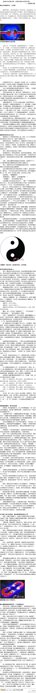

挺有启发的，例如对黑与白的描述：当某人对某一事务越是执着，就意味着他内心中相反的力量越强。@武志红:表面行为总有欠缺，但背后的动力没有欠缺。－－美国催眠师斯蒂芬－吉利根。这句话的意思是，动力本身并无好坏，但是，当你将某个动力视为坏时，你就会用坏的方式追求它；当你将某个动力视为好时，就会用好的动力追求它。－－老文章《优雅地表达你的欲求》：网页链接 
//@武志红:因为这种心理，中国助人行业挣钱的路数，容易走这个路线：先扮演一个毫不利己专门利人的理想神医，以此赚名气，赚了名气后，再靠名气挣钱。当然，这不光是助人行业的路线，也是中国从政的路线，说国人集体滞留在口欲期，这也是一个展现。@武志红:关于服务性行业，国人有这种矛盾：一方面，期待完美服务，譬如找医生，无论生理的还是心理的，都想找神医，包治百病；另一方面，又觉得这种人的软性服务，不应该收费，收费，或高收费，就亵渎了这份职业。我想，这也是口欲期婴儿的心理吧，期待一个完美妈妈，又期待妈妈的爱是无偿的。
看评论//@李雪爱与自由:看了这么多评论，很想总结下幸福有多少种，可惜总结不出来。大致说，幸福是人与人之间，或者与自然之间的链接。在评论中，没有关于获得好成绩、升学升官发财的内容，都是生活中平常点滴的细节。在细节中，我们彼此看见，连接共振，就是幸福的滋味。@李雪爱与自由:做个小调查，一起回忆下生命中哪些时候，你感受到过真正的幸福。
这能解释很多现象：在单位里唯唯诺诺，循规蹈矩的人，却不遵守公共规则，比如没摄像头的情况下闯红灯。//@李雪爱与自由:尊重规则的力量诞生于自由意志，而不来自是非观教育，越自由的国家人民越遵守规则。对错是非的评判只会带来恐惧和一旦松绑时的反弹，带不来对规则的尊重。@武志红:国人缺公德，why？早上跑步，看着小区漂亮的山上一条被踩出来的难看的路，我想，一个原因是，国人讨厌规则，因我们的规则多是强者塞给弱者的。因而，规则，像是迫害性的。当自己较虚弱时，会因恐惧而遵守规则，但一有条件，就会反对任何规则，追求为所欲为。真正的规则，需自由意志的参与。
我让#姣姣#说说她心目中的好老师，包括爸爸。在姣姣的追问下，我给出好老师的定义：教得好，表现就是学生都喜欢上TA的课。姣姣说：学得好才会喜欢上那门课，而且，学得好可能是家里辅导的缘故。- 咦，我怎么觉得姣姣比我明白事儿呢。